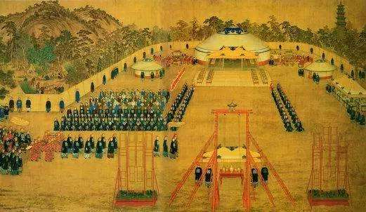
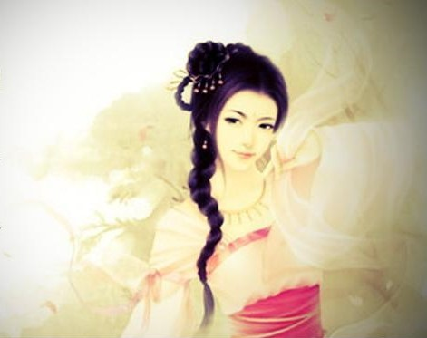
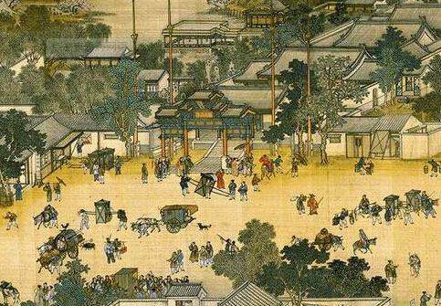
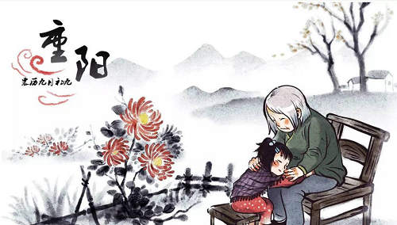

历史演变
重阳节已有两千多年的历史。重阳节的起源，最早可以推到春秋战国时期。战国时代，重阳已受到人们重视，但只是在帝宫中进行的活动。

战国时期

汉代，过重阳节的习俗渐渐流行。相传汉高祖刘邦的妃子戚夫人遭到吕后的谋害，其身前一位侍女贾氏被逐出宫，嫁与贫民为妻。贾氏便把重阳的活动带到了民间。贾氏对人说：在皇宫中，每年九月初九，都要佩茱萸、食篷饵、饮菊花酒，以求长寿。从此重阳的风俗便在民间传开了。
“重阳节”名称见于记载却在三国时代。据曹丕《九日与钟繇书》中载：岁往月来，忽复九月九日。九为阳数，而日月并应，俗嘉其名，以为宜于长久，故以享宴高会。
晋代文人陶渊明在《九日闲居》诗序文中说：余闲居，爱重九之名。秋菊盈园，而持醪靡由，空服九华，寄怀于言
。这里同时提到菊花和酒。魏晋时期有了赏菊、饮酒的习俗。
唐朝时，重阳节才被定为正式节日。从此以后，宫廷、民间一起庆祝重阳节，并且在节日期间进行各种各样的活动。
宋代，重阳节更为热闹，《东京梦华录》曾记载了北宋时重阳节的盛况。《武林旧事》也记载南宋宫廷“于八日作重九排当”，以待翌日隆重游乐一番。
明代，皇宫中宦官宫妃从初一时就开始一起吃花糕庆祝。九日重阳，皇帝还要亲自到万岁山登高览胜，以畅秋志。
清代，明代的风俗依旧盛行。
20世纪80年代起，中国一些地方把夏历九月初九日定为老人节，倡导全社会树立尊老、敬老、爱老、助老的风气。1989年，中国政府将农历九月初九定为“老人节”、“敬老节”。
2012年12月28日，中国全国人大常委会表决通过新修改的《老年人权益保障法》。法律明确，每年农历九月初九为老年节。
